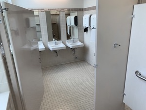
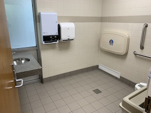
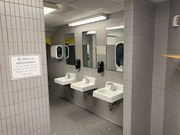

- Eyring Science Center 4th floor: C453A
- Peaceful - few people use it; poop worry free
- Bright - lots of natural light; sometimes that's all the sun a college student can hope for
- Hidden - feels like a secret and everybody likes to know secrets
- Bensen Building Basement: W013
- Massive - this room is huge; it feels like the entire building could fit in there
- Convenient - it's in one of the most travelled buildings on campus
- Lots of stalls - take your time, there's nobody waiting
- Nichols Building Single Person: 102, 106
- High Quality - modern with lots of light (1000000000% nicer than your apartment bathroom)
- Convenient - located near one of the most popular walkways on campus
- Private - no need to worry about the awkward bathroom interactions
- Herald R. Clark Building Basement: 138
- Feels Exciting - There's a slight element of fear from the step up into the restroom and the big caution sign where you can put a dent in your head as you come out of the stall.
- Your Own World - The main stall has the ceiling lowered just outside, making it feel like your own little cave of privacy.
- Eyring Science Center Underground Labs: U131
- Secret - Located in one of the coolest places on campus. It feels like a restricted mad scientist area, but it's open to everyone
- Convenience - Next to the elevators, and near the center of campus.




Here's my brother for ya!
And here is a tableau graph about BYU Football!